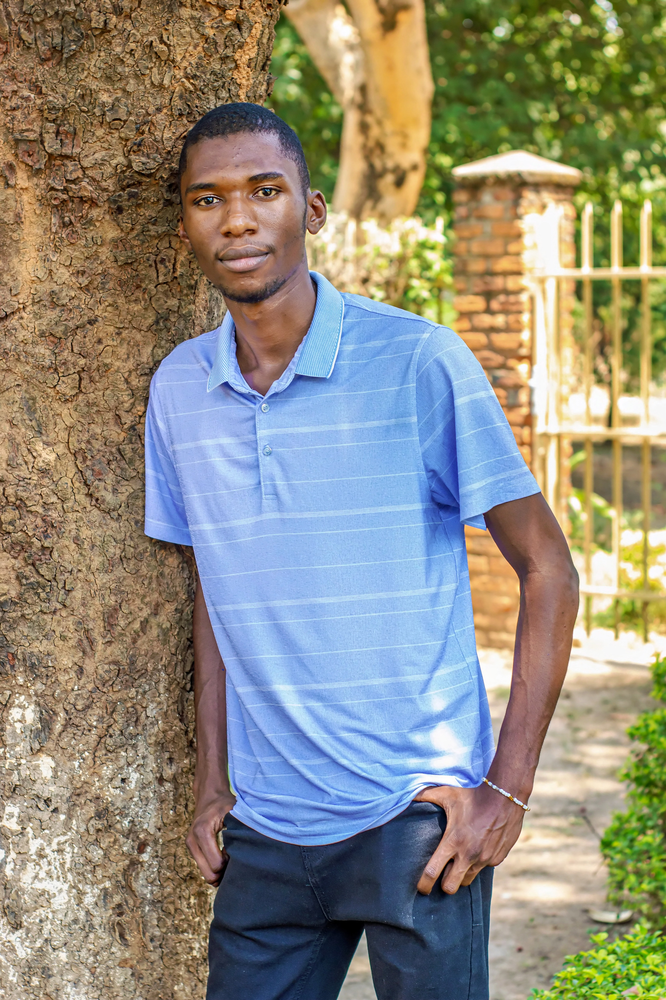

01
Programmation
J'aime apprendre en construisant. Ecrire du code me permet de transformer une idee en produit concret.
Benjamin Mwaku
Je suis etudiant a l'Universite Don Bosco de Lubumbashi. J'aime la programmation, la cybersecurite, le developpement web, la musique baroque et les nouvelles technologies.
UDBL
Formation universitaire en informatique
Web
Creation de sites modernes et responsives
FCC
Formation continue sur FreeCodeCamp
Focus actuel
Code, securite, apprentissage
Langage du moment
CSS
Domaine a approfondir
Cybersecurite appliquee
Inspiration musicale
Pachelbel, Beethoven, esprit baroque
Signature

A propos
Je m'appelle Benjamin Mwaku. Je suis etudiant a l'UDBL et je developpe ma base technique autour du web, de l'informatique et de la securite numerique. J'aime comprendre comment les systemes fonctionnent, concevoir des interfaces utiles et progresser chaque semaine a travers la pratique.
Passions
Entre creation, analyse et culture technique, je cherche a relier curiosite personnelle et progression professionnelle.
01
J'aime apprendre en construisant. Ecrire du code me permet de transformer une idee en produit concret.
02
Je m'interesse aux bonnes pratiques, a la logique defensive et a la comprehension des vulnerabilites.
03
J'aime concevoir des interfaces nettes, responsives et coherentes, avec attention aux details visuels.
04
Les oeuvres de Pachelbel et Beethoven accompagnent ma concentration et renforcent mon gout pour les structures harmonieuses.
Parcours
Je developpe mon profil avec une combinaison de formation academique et d'apprentissage autonome.
Universite
Je poursuis mes etudes en consolidant mes bases en informatique et en explorant des domaines techniques complementaires.
Formation continue
Je suis une formation sur FreeCodeCamp pour progresser en developpement web, pratiquer regulierement et valider mes competences.
Direction
Construire des projets web solides, enrichir mes connaissances en cybersecurite et documenter clairement mes progres.
Technologies
Structure
HTML5
Style
CSS3
Framework CSS
Tailwind CSS local
Interactions
JavaScript
Accomplissements
Cette section est prete pour accueillir vos projets, certificats, competitions, stages ou distinctions.
Projet phare
Remplacez cette carte par un projet important avec une image, un resume et un lien.
Certification
Ajoutez ici vos certificats FreeCodeCamp, distinctions academiques ou preuves de progression.
Experience
Cet emplacement peut presenter un stage, une collaboration ou une contribution notable.
Contact
Vous pouvez remplacer ce bloc par vos liens personnels plus tard: GitHub, LinkedIn, email ou portfolio detaille.